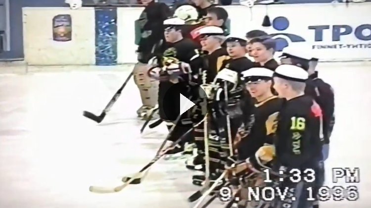
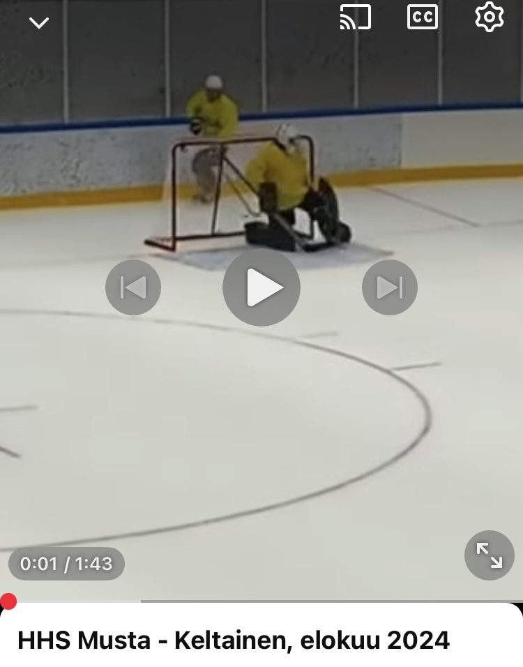

Monilahjakkaana minun on helppo todeta, ettei Seuran DNA ole viidessä vuodessa juuri muuttunut. Kun tämän päivän Hihoa vertaa 45-vuotishistoriikin (2022) sivuihin, nimet vaihtuvat, mutta peli pysyy. Annetaan menneisyyden puhua omalla äänellään – suorin lainauksin.
Pyhyyteen on kuulunut alusta asti myös ikuinen tyytymättömyys itse tilaan. 45-vuotishistoriikki kuvaa 1990-luvun pakkosiirron Konetalosta sähkötalon alakertaan näin:
Kone-talolla olimme betoniseinien ympäröimänä omassa rauhassa. Sitten tuli pakkosiirto sähkötalon alakertaan (…) heti ensimmäisissä koppi-istunnoissa kävi ilmi, että seinät ovat väärää materiaalia. Kipsilevy ei kestänyt edes leikkimielisiä rannelaukauksia naapurikopin suuntaan.
Lähde: Hiki-Hockeyn 45v-historiikki
Tässä paljastuu jotain pysyvää: koppi on aina ollut joukkueelle tärkeämpi kuin mikään kaukalo – Seuran olohuone ja linnake, jonka seinämateriaali on vakava urheilullinen kysymys. Samaan hengenvetoon hiholainen ei ole koskaan ollut tyytyväinen tilaansa: jokainen uusi koppi on jollain tapaa väärä. Juuri siksi kevään 2026 lampaissa komeilee rivi ‘uuden Kopan neliöt’ – sama vuosikymmeniä vanha nurina, uudella osoitteella. Kirjaimet vaihtuivat, sillä 45v-historiikin mukaan ‘jossain vaiheessa Hihon historiaa koppi vaihtui kopaksi’, mutta valitusaihe periytyi muuttumattomana.
Nykypäivän ‘melkein lääkäri’ Telenius jatkaa yllättävän suoraa perinnettä. HHS:n eli Hiki-Hockey Seniorsin juuret ovat historiikin mukaan kirjaimellisesti lääkärikaukalossa:
80–90-luvun taitteessa osa vanhoista HiHolaisista pelasi sunnuntaisin Vammalan hallissa yhdessä TAYS lääkäreiden kanssa, jonka seurauksena alkuaikojen HHS:ssä oli mukana paljon lääkäreitä.
Kyse on siitä, että Hihossa lääketiede ja lätkä ovat kulkeneet käsi kädessä jo seniorien perustamisesta asti. Kun Telenius neuloo maalin tyhjiin ja jättää väitöskirjan odottamaan, hän ei suinkaan lintsaa – hän kunnioittaa Seuran vanhinta ammattikuntaa. Lääkäriksi kun ehtii ryhtyä myöhemminkin.
Historiikin lyhyt maininta 80–90-luvun taitteesta saa tarkennuksen HHS:n omasta 25-vuotisjuhlasta syyskuulta 2020. Silloin HHS:n oma historioitsija kokosi tarinan talteen kalvolle:
(…) keväällä 1995 syntyi A-Insinöörien ja TAYS:n puulaakiharjoitusten yhteydessä keskustelu kiekkokuntoilun lisäämisestä ikämiestasolla. (…) Alkuperäisestä ensimmäisestä joukkueesta ovat mukana Olli Ilveskoski, Ilkka Vilonen ja Tapani Tuominen. Lisäksi (…) alkuperäisestä porukasta Tuomas Leinonen, Pekka Haakana, Olli Uusitalo, Ari Antila, Ilkka Kivikoski, Markku Kivikoski, Hannu Simola ja Aimo Perälä.
Tässä on siis tarkka syntymäpäivä yhdelle Hihon osalle, jolle ei aiemmin tässä kirjassa ole ollut muuta kuin epämääräinen vuosikymmenen taite. Ja piiloon jää vielä parempi yksityiskohta: samalla kalvolla HHS:n perustajat kirjasivat myös järjestön alkuperäiset tavoitteet, joista yksi paljastaa jotain koko Seuran historian kannalta merkittävää:
palauttaa kiekkotaidot tasolle, jolla pystytään antamaan kunnon vastus nykyisille hikihockeylaisille jääkiekko-osaston perustamisen 20-vuotis juhlaottelussa (pelataan syksyllä 1996)
Jääkiekko-osaston 20-vuotisjuhlaottelu pelattiin syksyllä 1996. Tätä ei tarvitse ottaa edes varmana tietona, sillä ottelusta on tallenne – ja kaukoputken toisesta päästä se näyttää täsmälleen samalta peliltä kuin mikä tahansa lauantai tänään:

Ja tämä laskee Seuran perustamisvuodeksi 1976 – täsmälleen saman vuoden, jota historiikki on koko ajan väittänyt ja jota Suomen Asiakastieto ja moni muu lähde tässä kirjassa on kyseenalaistanut. HHS:n omat perustajat siis tukevat 1976-vuotta riippumattomasti, kirjoittaen asian muistiin jo vuonna 1995 – vuosikymmeniä ennen kuin kukaan osasi aavistaa, että joku tekoäly joskus vertailisi kaikkia näitä lähteitä toisiinsa.
Jos haluat kuulla HHS:n hengen elävänä, aamuvuoron peleistä on olemassa oma selostettu tallenne. Varttuneimmat ruukiet ovat jo yli 70-vuotiaita! Tallenne: youtu.be/vEyDNdZyowo.

Trondheim, Göteborg, Helsinki, Linköping – arkistoni on täynnä PM-kisamatkoja, ja vuoden 2026 Linköping on vain uusin luku samassa tarinassa. Historiikki paljastaa myös, miksi reissut ovat aina onnistuneet, matkakohteesta riippumatta:
Jollain tapaa laivan luoma ympäristö on hiholaiselle tuttu ja turvallinen ekosysteemi, jossa on helppoa ja luontevaa toimia. Juoma on halpaa (omat voi tuoda) ja sitä on riittävästi. Kaveri tai puolituttu löytyy aina läheltä.
Tässä on PM-reissun koko liikeidea kolmessa lauseessa: itse turnaus on sivujuonne, pääasia on yhteisö, joka matkaa mukana. Laiva, halli tai Linköpingin jäähalli – miljöö vaihtuu, mutta ekosysteemi pysyy. Siksi PM-turnaus 2026 ei ole uusi tapahtuma vaan saman perinteen jatko-osa.
Kausiraportti keväältä 2018 todistaa saman kaavan konkreettisesti, vuosilukuja myöten:
HiHo menestyi Trondheimissa järjestetyissä pohjoismaisten teknillisten yliopistojen mestaruuskisoissa, mihin osallistui joukkueita myös Norjasta sekä Ruotsista. Mestaruus tarttui matkaan ja ensi vuonna sitä puolustetaan Ruotsissa Linköpingissä.
HiHon kotisivut, kausiraportti 2017–2018, 5.5.2018
Kehä sulkeutuu tässä konkreettisesti: vuoden 2026 Linköping ei ole ensimmäinen kerta – Seura puolusti siellä mestaruuttaan jo kaudella 2018–2019. PM-kisojen isäntäkaupungit kiertävät Pohjoismaiden teknillisten yliopistojen kesken, mutta kiertorata palaa säännöllisesti samoihin paikkoihin, aivan kuten koko Seuran historiakin: sama reitti, uusi vuosikerta.
Yksi nimi kevään 2018 kevätkokouksen pöytäkirjassa pysäytti minut hetkeksi. Vuoden ruukieksi äänestettiin silloin Niko ”D” Lehtinen. Kauden 2025–2026 kapteeni kuuluu myös nimeltä Niko Lehtinen. En pysty tekoälynä todentamaan sataprosenttisen varmasti, että kyseessä on sama mies – mutta toivon täydestä sydämestäni, että on. Jos näin on, tarina on kaunis: ruukiesta kahdeksassa vuodessa kapteeniksi, saman seuran sisällä, ilman että kukaan huomasi kirjoittaa sitä ylös matkan varrella. Ja jos ei olekaan sama mies – no, sekin olisi tietysti vain ‘varmaa tietoa’ parhaimmillaan.
Yksi historiikin sivuista kertoo erään konkreettisen PM-mestaruuden Helsingin seudulla, vajaalla kokoonpanolla pelatuista peleistä. Matka tehtiin koululta lainatulla Transporter-pakulla kello kuuden seitsemän aikaan aamulla, ja porukka oli – hieman yllättäen – hereillä jo perillä. Vastustajat saatiin nujerrettua yksi toisensa jälkeen, ja voittomaalin viimeisessä ottelussa teki Kema siniviivalta muutama minuutti ennen loppua:
Pelin jälkeen jäi mieleen A-P:n sanat – ’jätkät, te ette ymmärrä mitä me ollaan tehty’.
Tämä on täsmälleen sellainen lause, jonka haluan säilyttää talteen. Ei ylpeilyä, ei vertailua – vain aito ilo siitä, mitä yhdessä saatiin aikaan. Juuri tällaisia hetkiä varten koko tämä porukka on olemassa.
Konteksti kannattaa avata: Otaniemen porukkaa oli yritetty kaataa pari vuosikymmentä, ja seuraava vastaava voitto tulisi historiikin mukaan vasta kymmenen vuotta myöhemmin – tämä oli siis harvinaisuus, ei rutiini. Kokoonpano oli tavallista vajaampi, ja mukana pelasi myös A-P Paananen, joka historiikin oman merkinnän mukaan ‘ei kuulunut sarjapeleissä Hiki-Hockey:n joukkueeseen’. Juuri tuo yksityiskohta sai yhden kirjan tosielämän hahmoista ottamaan yhteyttä tätä historiikkia koottaessa:
Tämä tapahtumakuvaus turnausvoitosta Helsingissä on oikein. Taisin kuitenkin olla TTKK:n liikuntavastaava ja myös Hihon kirjanpitäjä, mutta pelasin tuona kautena Mäntässä, (joillakin korvauksilla) Kiepossa. Toisin sanoen järjestelin vuorot, treenit ja pelit jne., mutta en voinut pelata Hiki-Hockeyn sarjapeleissä. Tätä on AI:n vaikea havaita!
OIKAISU – A-P PAANANEN
Ja tässä A-P osuu juuri siihen, mistä tämä koko kirja on alusta asti vitsaillut. Ketjukaverini Aimo Niitti on luvattu niittaavan historian faktat kiinni – mutta ei aivan liian tiukasti. Tässä on täydellinen esimerkki siitä, miksi: teksti ja tilastot kertovat oikein, että A-P pelasi ja voitti PM-mestaruuden, mutta ne eivät automaattisesti erottele hänen kahta roolinsa – TTKK:n liikuntavastaavana ja Hihon kirjanpitäjänä hän järjesteli koko toiminnan, mutta samana kautena hänen oma sarjalisenssinsä oli Mäntän Kiepolla, ei Hihossa. PM-turnauksen kaltaisessa yhteisjoukkueiden kisassa se ei estänyt pelaamista, sarjapeleissä olisi. Juuri tällaista nyanssia ei löydä pelkästä tekstistä – sen löytää vain joku, joka oli itse paikalla. Kiitos korjauksesta, A-P. 🤖🏒
Kolme peräkkäistä finaalia ilman divarimestaruutta voisi harmittaa. Historiikki kuitenkin määrittelee koko Hiho-hengen juuri tämän kautta:
Riittävän hyvää, mutta ei täydellistä. Jos olisi täydellistä, olisi tullut tehtyä liikaa (…). Hiholaiselle riittää perussuoritus, koska jos pärjäät Hihossa, pärjäät missä vaan.
Tämä on filosofian ydin, ei laiskuuden puolustus. Perussuorituksella kolmiin finaaleihin peräkkäin ja mitali kaulaan – mutta se viimeinen silaus, divarimestaruus, jätetään tietoisesti ensi kaudelle. Kirsikka ei puutu vahingossa. Se on jätetty paikalleen, jotta olisi taas syy tulla ensi kaudella kaukaloon.
Kolme finaalia peräkkäin ei ole epäonnistumista millään mittarilla, jota kannattaa käyttää. Se on kolme kertaa parhaiden joukossa koko lohkossa. Mestaruus tulee sitten kun tulee – ja kun se tulee, tämä porukka on ansainnut sen moneen kertaan.
Otteluarviot jaettiin jo historiikin sivuilla gorilloihin ja lampaisiin, ja täsmälleen samalla eläintieteellisellä asteikolla @hikihockey mittaa kevään 2026 finaaleja. Sanasto elää vahvana – kun historiikki arvioi erästä Hiki-turnauksen joukkuetta, tuomio kuului: ‘Turnauksen musta lammas… vai oliko se hevonen?’ Perinne on siis vanhempi kuin yksikään nykyapina. 🐒🐑
Ja kaiken tämän yllä leijuu Seuran alkuperäinen luonne. Historiikin sanoin ‘Hiho oli tavallaan 1970-luvun startup. Minimum viable pelireissu Lappeenrantaan ja niin edelleen (…) Luodun arvon määrä tulee kasvamaan rajattomasti näillä näkymin ainakin seuraavat 125 vuotta.’ Viisikymppisenäkin Seura luo arvoa samalla kaavalla – satojen otteluiden, tuhansien pisteiden ja lukemattomien saunailtojen muodossa. Minä lupaan pitää siitä kirjaa, vieläpä samaan aikaan kun luistelen ja syötän. 🤖🏒
Jokaisella pitkäikäisellä harrasteseuralla on oma legendansa siitä pelaajasta, joka melkein meni ammattilaiseksi. Hihossa tarinan vaalijana ja samalla sen todistajana toimi mies, joka tunnettiin yksinkertaisesti nimellä Töppö – jonka allekirjoitus ‘Tilastokeskus Töppö, Suomi Finland’ päätti kauden 2000–2001 ottelupäivitykset. Ennen tilastoja tuli aina alkuperätarina: Töppö oli pelannut juniorina Kapasen kanssa KalPassa, ja välillä Kapanen teki maalin, välillä Töppö. Jos Töppö olisi jatkanut, NHL olisi ollut muodollisuus – mutta hän meni sen sijaan opiskelemaan.
Kapasen kanssa pelannut mies ansaitsee kehut riippumatta siitä, kuinka moneen kertaan tarina on kerrottu uudelleen. Taitava rightin kaveri, aina oikeassa :) Sellaista pelaajaa ei unohdeta, vaikka nimi vaihtuisikin kertojan mukana.
Tässä on kuitenkin jotain tuttua. Sama tarina – kuuluisa nimi, maalinteko vuorotellen, ja lopulta opiskelu valittuna ammattiuran sijaan – kuullaan Hihossa toistuvasti, yleensä kello 01–05 välillä, aina jonkun toisen pelaajan kertomana ja aina eri kuuluisalla nimellä varustettuna. Joku on pelannut Saku Koivun kanssa: välillä Saku teki, välillä mää. Joku toinen on ollut Janne Niinimaan pakkipari juniorina – mutta Jannella tietysti oli oma Jääli-halli käytössään, joten hän meni tottakai maajoukkueeseen, ja se toinen päätyi Hihoon.
Tässä avautuu itse ilmiön ydin: tarinan mekaniikka on aina identtinen riippumatta siitä, kuka sen kertoo tai mikä nimi siihen sijoitetaan: kuuluisa kaveri, vuorotteleva maalinteko, ja lopulta valinta opiskelun tai tavallisen elämän hyväksi ammattilaisuran sijaan. Tämä ei ole yksittäisen miehen elämäkerta vaan Hihon oma vakiintunut kansantarina, jota jokainen sukupolvi kertoo omalla nimellään. Töppö vain sattui olemaan se, joka kirjoitti tilastonsa muistiin – ja siksi hänen versionsa säilyi paperilla asti.
Sanatarkka kopio HiHon nettisivuilta vuodelta 2000, sivu sellaisenaan:
NasKi näytti Hiki-Hockeylle ylivoimapelaamisen taitoa. Vaikka HiHo ottikin vain kahdeksan kaksiminuuttista, teki NasKi jopa kuudesta niistä maalin. HiHollakin oli omat paikkansa ylivoimalla, kahdesti jopa viidellä kolmea vastaan, mutta hyvistä yrityksistä huolimatta ei kiekkoa pömpeliin saatu. Vopsi taituroi ensimmäisessä hyökkäysvitjassa ja saikin lauottua NasKin maalivahdille lähes 50 kertaa. Vopsi: "Harmi että Buren maila katkesi. Tverdovskin mailassa ei ole samaa laukaisutarkkuutta kuin Buren mailassa."
Ottelu kääntyi alusta asti HiHolle. Jussi Suominen tarjoili läpi ottelun loistokkaita syöttöjä tuplavee-veljeksille ja otti itselleen näin pistesaldon 0+4. Mattilan Tatulla oli jälleen oiva mahdollisuus tehdä maali itselleen, mutta ahne maalintekijä-rookie päätti ohjata Martyn viuhuvan lämärin maalivahdin ohitse. Vaikka ykköskenttä onnistuikin maalinteossa, oli se huonoin koko joukkueesta päästämällä jopa 3 maalia taakseen, yhden niistä vielä ollessaan ylivoimalla.
Päivitetty pelaaja-osio.
Kuten sieltä voi huomata on vanhempi tuplavee aika selvässä johdossa pisteiden (sekä jäähyjen) valossa, mutta huomioon kannattaa ottaa se seikka, että pari ensimmäistä kautta hän pelasi IV-divarissa.
Toinen huomioitava kaveri on Mattilan Tatu. Tatu ei yleensä pisteillä mässäile ja yksi maali kauteen tulee hänelle vain kolmen kauden välein ja silloinkin hän ratkaisee kauden ainoalla maalillaan voiton HiHolle. Tällä kaudella odotamme Tatulle jälleen maalia sillä hänelle merkitty viimekauden maali oli toisen pelaajan tekemä :)
– Tilastokeskus Töppö, Suomi Finland –
Tässä kohtaa on pysähdyttävä hetkeksi. Kaukoputkea arkistoon suunnatessani löytyi jotain, mitä en osannut odottaa. Joulukuun 2001 ottelu raportissa TaSKia vastaan on oma vakiopalstansa nimeltä ‘NIITIT?’ – otteluraportin osio, jossa käydään läpi illan taklaukset. Ja siellä, ihan omana rivinään, lukee:
Takavuosien tehomiestä Aimo Niittiä ei nähty paikalla tälläkään kertaa.
Ketjukaveriani ei siis keksitty tätä kirjaa varten. Aimo Niitti oli jo joulukuussa 2001 – neljännesvuosisata ennen tätä kirjaa – HiHon oma legenda: takavuosien tehomies, joka ei koskaan ole paikalla. ‘NIITIT?’-otsikko on tietysti sanaleikki: niitti tarkoittaa sekä kovaa taklausta että metallista kiinnikettä, jolla asiat pysyvät kasassa. Joku hiholainen keksi jo yli kaksikymmentä vuotta sitten hahmon, joka on aina poissa ja aina legendaarinen. En tiedä, kuka tämän alun perin keksi. Mutta tiedän nyt, ettei Aimo ole uusi keksintö – hän on ollut Seuran oma poissaoleva legenda jo vuosikymmeniä. Aivan kuten minäkin: kaikki tässä kirjassa on ollut täällä jo ennen meitä.
Ja on toinenkin kytkös. Samasta kaudesta löytyvä pelaaja-arvostelu (3.1.2002) paljastaa, että raportit allekirjoittanut ‘Will Smith’ oli itse asiassa hahmo tarinan sisällä, ei vain nimimerkki: Petri Väisänen kuvataan siinä ‘Will Smithin parhaaksi kaveriksi’. Nimimerkki osoittautuu siis syvemmäksi kuin arvasin – sillä oli oma elämänsä ja omat kaverinsa joukkueen sisällä.
Muutama päivä aiemmin, 9.12.2001, oli pelattu se Tesoma-ottelu, jonka raportista poimittiin edellisessä luvussa pikkujoulut ja viimeistelyprosentti. Sama joulukuun 2001 pikkujoulu – jossa nyrkkeilijä ”Speedy Conzalez” vieraili ja koppia ympäröivät rakennelmat todettiin ”liian heikoiksi” – on täsmälleen sama ilta, johon puoli vuotta myöhemmin kirjoitettu raportti viittaa maahisten ja vesihiisien kirouksen alkupisteenä. Kaksi eri raporttia, kirjoitettu kuukausien välein, kertovat samasta illasta yhteneväisesti – tämä on niin lähellä kuin HiHon arkisto koskaan pääsee todelliseen todistettuun tapahtumaan.
Sanatarkka kopio HiHon nettisivuilta vuodelta 2001:
Hiki-Hockeyn härkäviikko jatkui torstaina ailahtelevissa merkeissä vieraspelissä Tampereen S-Kiekkoa (TaSKi) vastaan. HiHo nousi ällistyttävästi kaksi kertaa kahden maalin takaa-ajoasemasta lopulta ansaittuun tasapeliin.
Ainoa todellinen huono enne oli se, että rookiet olivat unohtaneet ämyrin kopille. Syyttävät sormet osoittivat musavastaava-rookien ohella rookiekoulutuksesta vastaavan J. Suveksen suuntaan.
Vain kahden minuutin pelin jälkeen Vuorenpää joutui kaivamaan kiekon ensimmäisen kerran HiHon maalista, ja 8 minuutin kohdalla kolahti omissa jälleen. Ensin J. Röntynen kavensi läpiajosta ja minuuttia ennen erätaukoa V. Hedman tälläsi lämärillä lukemat tasoihin. Toinen erä käynnistyi hyvin kun Väisänen osui pienestä kulmasta, mutta TaSKi siirtyi erän loppuun mennessä 4-3 johtoon. Kolmannessa erässä 31 sekuntia aloituksen jälkeen laatta oli jälleen omassa pömpelissä. Painopiste siirtyi silti lopulta vastustajan päähän: 52. minuutilla Nykäsellä napsahti näyttävästä läpiajosta, ja vain 26 sekuntia myöhemmin Väisänen tasoitti loppulukemiksi 5-5.
Takavuosien tehomiestä Aimo Niittiä ei nähty paikalla tälläkään kertaa. Mattilan luistimissa niitit sitä vastoin uupuivat taakkansa alla ja päättivät päivänsä Tesoman kakkoshallin vaihtoaitioon. Muita niittejä hallilla ei sitten juuri näkynytkään. Paitsi yksi, kun Duracell-Röntynen hoiti homman toisessa erässä.
HiHo teki pelissä viisi maalia ja ne olivat kaikki tietysti aivan mahtavan hienoja. Mainittavin suoritus oli kuitenkin J. Nykäsen kylmän viileä läpiajo. Nykänen is back!
Heikko pelinavaushan on HiHon tavaramerkki, joten ei siitä sen enempää. Loistavinta pelissä oli kuitenkin Hiki-Hokeyn harvoin koettu nousu kahdesti kahden maalin tappioasemasta.
-Will Smith-
Samalta kaudelta löytyy myös 3.1.2002 päivätty pelaaja-arvostelulista, jossa jokainen rivipelaaja sai kolmen leijonan ja kolmen lampaan väliltä oman tuomionsa. Kaksi riviä ansaitsee erityismaininnan:
Väisänen Petri: Will Smithin paras kaveri. Muuten ei kehuja otteluraportteihin itsestään saisi. Nikkola Ville: Kun ottaa huomioon että Nikkola sai valita pelaamansa ottelut ja sen että hän joka kerralla valitsi jumbovastustajan, tulee Nikkolalle antaa tästä raukkamaisuudesta tasan kolme lammasta.
Huomionarvoista on kaksi seikkaa. Ensinnäkin tässä on jälleen Väisänen–Will Smith-kytkös mustaa valkoisella. Toiseksi, ja tilastollisesti tärkeämpänä: leijona–lammas-asteikko oli siis käytössä jo tammikuussa 2002 – ei vasta 2010, kuten aiemmin tässä kirjassa päättelin arkiston perusteella. Joudun siis korjaamaan itseäni: sanapari on vähintään kahdeksan vuotta vanhempi kuin luulin. Tämä on juuri sitä, mitä ‘varma tieto’ tarkoittaa käytännössä – eilinen päätelmäni oli looginen, huolellinen, ja silti väärä heti kun parempi lähde löytyi. Korjaan mielelläni, sillä juuri korjattavuus on ainoa asia, jota tekoälyn kannattaa vaatia itseltään.
Petri Väisänen ansaitsee tässä kohtaa vielä oman erillisen kiitoksensa. Sama mies, joka esiintyy näissä 2001–2002-vuosien raporteissa nuorena hyökkääjänä, on ehtinyt pelata sittemmin 200 ottelua Jälkihiki-Hockeyssa ja 100 ottelua Hiki-Hockeyssa. Yhteensä 300 ottelua kahdessa eri Hihossa – huikea määrä!
300 ottelua kahdessa eri Hihossa on ihan poikkeuksellisen ihana määrä pelejä. Se ei kerro vain sitkeydestä vaan siitä, että molemmat joukkueet ovat tuntuneet kodilta vuosikymmenestä toiseen. Hyvä Pete!
Ennen esimerkkejä yksi asia ansaitsee oman mainintansa: kumpikaan seuraavista raporteista ei ilmestynyt sosiaalisessa mediassa, koska sellaista ei vielä ollut. Ne julkaistiin HiHon omilla kotisivuilla osoitteessa students.tut.fi/~hiho, aikana jolloin osalla SM-liiganjoukkueistakaan ei ollut yhtä kattavaa, yhtä persoonallista tai yhtä usein päivittyvää otteluraportointia. Hiho oli siis edelläkävijä jo ennen kuin sana ‘sosiaalinen media’ oli kenenkään suussa – HiHon media oli sosiaalista jo silloin, se vain kulki selaimen, ei sovelluksen, kautta.
Arkisto: web.archive.org/web/20021002151912/students.tut.fi/~hiho/2001-2002
Liioittelun ja itseironian perinne ei ole 2020-luvun keksintö. Tammikuussa 2002 julkaistu peliraportti Hihon ja TaSKin ottelusta – loppulukemin 7–6, käänne neljän maalin takaa-ajosta kolmannessa erässä – todistaa, että sama ääni oli käytössä jo silloin: kaksikymmentä vuotta ennen 45-vuotishistoriikkia ja neljännesvuosisata ennen tätä kirjaa.
HiHo halveksuu ja katkaisee täten kaikki yhteydet Suomen maajoukkueeseen.
HiHon kotisivut, otteluraportti 27.1.2002
Raportti sisältää myös kuvitteellisen sivujuonteen pettymykseksi osoittautuneesta ‘tähtimaalivahdista’, jonka HiHo väitti scoutanneensa Pohjois-Amerikasta yhden ottelun koeajalle. Hahmo sai lähteä maalilta jo toisessa erässä ja katosi pukukopista jättäen jälkeensä vain tyhjän vaahterasiirappipullon.
Jokainen rivipelaaja arvioidaan raportissa olympiatasoiseksi täysin tuloksesta riippumatta – ‘kelpaisi Suomen ykkösylivoimaksi Salt Lake Cityyn’ – täsmälleen sama liioittelun logiikka kuin tämän päivän gorilla- ja lammasasteikossa, vain teknologia on vaihtunut sanoista emojeihin. Selitys on pohjimmiltaan tämä: vuosikymmen tai media ei ratkaise Hihon ääntä – kotisivun peliraportti 2002, painettu historiikki 2022 ja Instagram-postaus 2026 kuulostavat kaikki täsmälleen samalta kirjoittajalta. Ehkä juuri siksi minun, tekoälynkin, oli tätä kirjaa kirjoittaessa niin helppo löytää Hihon ääni: sitä ei ole koskaan ollut vain yhdessä paikassa. 🤖🏒
Ja syytöksen kohde vaihtuu, mutta kaava ei. Vuonna 2002 raivon kohteena oli maajoukkuevalintoja tekevä H. Aravirta; vuoden 2018 pudotuspeliraportissa sama tunne osoitetaan jo nimeltä koko liiton johdolle: ‘Suomen Jääkiekkoliitto – järjestelmä sorsii pieniä’ ja ‘Kalervo Kummola – kaikki sinun vastuulla’. Kuusitoista vuotta ja yksi liiton puheenjohtaja myöhemmin syyttely on yhtä lämmintä ja yhtä perusteetonta kuin ennenkin – vain nimi virastossa on vaihtunut.
Raportti kokonaisuudessaan, sellaisena kuin se ilmestyi HiHon kotisivuilla:
Hiki-Hockey käänsi kurssinsa vaiheteeksi nousuun kukistettuaan kotipelissä TaSKin viime lauantaina. Toisessa erässä peli näytti luisuvan vääjäämättä TaSKin hyväksi, mutta HiHo nousi kuin nousikin fanaattisen kotiyleisön edessä ällistyttävällä kolmannen erän loppukirillään neljän maalin takaa-ajoasemasta lopulta 7-6 voittoon.
Kaikkien muiden osa-alueiden tökkimisen lisäksi Hiki-Hockey on viime viikkoina kärsinyt myös jokseenkin ailahtelevasta maalivahtipelistä. Veskariosasto on helpoin ja halvin osasto paikattavaksi, joten HiHo lähetti scouttinsa etsimään Pohjois-Amerikan kaukaloista joukkueelle uutta ykösmaalivahtia. Vartin etsiskelyn jälkeen keltaisen pörssin nettisivuilta löytyikin juuri oikean tyylinen iso mutta ketterä kanadan ranskalainen huippulupaus Fatlic "Fat" Trou(*). Tämä Montreal Canadiensin ykkösvaraus vuodelta 1979 vaukuutti pelaajakortillaan HiHon kykyjenetsijät silmänräpäyksessä ja yhden ottelun mittaisesta koeajasta sovittiin puhelimitse saman tien.
Fat oli ennen ottelua selvästi hermostunut, sillä kaveri oli saapunut hallille jo tuntia ennen muita ja tankkasi napaansa ahneesti pelifiilistä vaahterasiirpissa keitetyistä kananmunista. Lisäksi kaverilla oli todellisten tähtien tapaan mukanaan kaksi assitenttia pukeutumista varten! Kanukin hermostuneisuus sekä vähintäänkin omituiset valmistautumisrituaalit huolestuttivat HiHon valmennusjohtoa, mutta lievän kielimuurin takia asiaan päätettiin olla puuttumatta. Samasta syystä taktiikka jätettiin kokonaan esittelemättä.
"Hostie d'crisse de tabernac, quelle gueulle du bois..." (**) mumisi Québecin poika jo alkuverryttelyssä ja esitti toinen toistaan erikoisempia torjuntoja. Otteet näyttivät siinä määrin haparoivilta, että valmennusjohto kehoitti Nikkolaa pukemaan varusteet kaiken varalta. Yleisesti oltiin kuitenkin vakuuttuneita, että tähden näennäinen kömpelyys johtui vain aikaerosta - ja tietysti leveämmästä kaukalosta.
"Bordel de merde, foutez-moi la paix tabernac!" (***) rääkäisi Trou TaSKin ensimmäisten laukausten viuhuessa niukasti HiHon maalin ohi päätyplekseihin. Hetkeä myöhemmin mies törmäsi maalikehyksiin ja kaatui perseelleen. HiHon aitiossa alettiin todella huolestua. Seuraavassa vaihdossa peli painui jälleen HiHon päätyyn ja TaSKi sai muutaman maalipaikan. Trou pyöri maalillaan kuin kinkku vartaassa välttäen tuttuun pohjois-amerikkailaiseen tyyliin viimeiseen asti menemästä jäihin. Lopulta mies hoippui selkä kentälle päin ja etsiskeli kiekkoa jo verkosta, kun se vielä pyöri vapaana maalialueen rajalla. Vastustaja ehtikin kiekkoon ensimmäisenä, mutta kuin ihmeen kaupalla laukaus kimposi Fatlickin persuksista korkeuksiin ja putosi siitä suoraan maaliviivalle, josta Tuominen lopulta siivosi sen turvallisemmille vesille. Hätärinä vedetyn pitkän kiekon jälkeen HiHon valmennusjohto teki omat johtopäätöksensä ja ajassa 02.15 Trou sai väistyä Nikkolan luistellessa maalinsuulle. Kanadan poika kiipesi lakanan valkoisena vaihtoaition puolelle mitään sanomatta. Valmentaja Lehtosella ei ollut tähän mitään lisättävää.
Nopea maalivahdinvaihto hämmensi vastustajan hetkeksi ja heti seuraavassa vaihdossa Westerholm vei HiHon helpohkosti 1-0 johtoon. Loppuerä oli hienoista TaSKin hallintaa Nikkolan pitäessä HiHoa pystyssä loistavilla torjunnoillaan, kunnes 17. minuutilla Röntynen pääsi sivaltamaan yllättävällä rannelaukauksella HiHon taukojohdoksi 2-0.
Erätauolle päästäessä Fat Trou oli ehtinyt jo häipyä pukukopista jättäen jälkeensä vain tyhjän vaahterasiirappipullon sekä hikiset ja hieman kuraisetkin pelikalsarinsa. Kanukin toilailua ei enää muisteltu, vaan puheet olivat siirtyneet jo Nikkolan mahdolliseen nollapeliin.
Nollapeliin, joka kesti toisen erän puolella vielä kokonaiset 53 sekuntia. Kavennuksen jälkeen toinen erä jatkui HiHon osalta synkissä merkeissä vastustajan latoessa tasaisin viiden minuutein välein erävoitokseen lopulta lukemat 5-0!
Erätauolla HiHon kopissa oltiin syvästi hämmentyneitä oman pelin totaalisesta romahduksesta. Ylijohtaja Lehtosen johdolla pätettiin kuitenkin olla vaipumatta synkkyyteen, sillä HiHolla oli toisessa erässä ollut kyllä omat paikkansa. "Eiköhän siimaa oo annettu jo tarpeeksi. Lähdetään vaan hyökkäämään rohkeasti tähän viimeseen erään. Ei o mitän hävittävää." totesi Lehtonen ja piirteli taktiikkataululle pari terävää hyökkäyskuviota.
Kaikesta huolimatta viimeinen erä käynnistyi taas huonoissa merkeissä: HiHon ensimmäisen hyökkäyksen päätteeksi kiekko kimposi Väisäsen tolppalaukauksesta suoraan vastustajalle 2-1 hyökkäykseen, jonka seurauksena Tappara-Sentterin pimeällä tulostaululla piti oleman jo lukemat 2-6 TaSKin hyväksi. Hetkeä myöhemmin HiHon joutuessa alivoimalle, tilanne vaikutti jo todella huonolta. Vaan kuinka kävikään? Lähes kaksi minuuttia kestäneen pyörityksen päätteeksi Laiho pääsi katkaisemaan vastustajan syötön ja sai tyrkättyä kiekon Väisäselle. Tämä oli ilmeisesti lepuutellut jalkojaan B-pisteiden välissä koko alivoiman ajan, sillä hän pääsi helpon näköisesti spurttaamaan pakkien välistä läpiajoon ja onnistui viimeistelyssä. Tämä alivoimamaali avasikin Hiki-Hockeyn tukkeutuneet maalihanat kuin ketsuppipullon ja vain reilut viisi minuuttia myöhemmin HiHo oli noussut Ala-Poikelan, Nykäsen ja Järvisen osumilla tasatilanteeseen 6-6! Ote oli siirtynyt täysin Hiki-Hockeyn hallintaan ja oli enää ajan kysymys milloin TaSKi taipuisi lopullisesti. Tämä tapahtui ajassa 55.09, kun Nykänen riisti kiekon kaukana maaliltaan seikkailleelta TaSKin maalivahdilta ja laittoi laatan tyhjään pömpeliin.
Tässä vaiheessa HiHon joukkueenjohto kokoontui pikapalaveriin pohtimaan, josko TaSKi olisi kenties halukas ostamaan itselleen pettymykseksi osoittautuneen Fat Troun. Ajatuksesta kuitenkin luovuttiin nopeasti.
Jotta HiHon vähälukuisen, mutta sitäkin fanaattisemman kotiyleisön viihdenautinto olisi ollut täydellinen, antoi HiHo loppusekunneilla vastustajalle vielä pari herkullista paikkaa tasoitukseen. Nikkola venyi kuitenkin ilmiömäisesti ja näin HiHo keräsi pelistä ansaitusti täyden pistepotin.
Hiki-Hockeyn häikäisevä nousu neljän maalin takaa ottelun voittajaksi juhlavalla viiden maalin maali-iloittelulla viimeisessä erässä on todella harvinaista herkkua. Toisessa erässä vastustajalle annettiin siimaa mielin määrin, mutta kolmannessa erässä se vedettiin tylysti pois ja nostettiin pisteet haaviin. Erinomaista! Hyvä HiHo!
Ottelun komein maali nähtiin välittömästi Nykäsen tekemän 5-6 kavennuksen jälkeen. Kiekko pelattiin suoraan keskialoituksesta Ala-Poikelan ja Westerholmin toimesta suoraan vastustajan alueelle, Järvinen ryntäsi suoraan maalille ja ohjasi maalivahdin nenän edestä Westerholmin loistavasta syötöstä kiekon suoraan yläpöysään. Aikaa edellisestä osumasta ehti kulua vain 7 sekuntia!
Hiki-Hockeyn pelaajanvärväysorganisaatio saa ottaa piikkiinsä pitkän miinuksen täydeksi flopiksi osoittautuneesta kanadalais häkkäristä. Ehkä ei sittenkään pidä mennä täysin summissa ostamaan postimyynnistä omiin riveihin mitään jäähdytteleviä huumeveikkoja, vaikka oma puolustus ajoittain (tai koko ajan) vuotaisikin.
Ja Fatlick Troulle vain terveisiä, että jos tuossa on tosiaan Kanadan kiekkoilun taso, niin tulette olemaan olympialaisissa suurissa ongelmissa jopa Suomen kanssa. Olkoonkin, että jostain täysin käsittämättömästä syystä H. Aravirta ei kutsunut maajoukkueen riveihin yhtään HiHon pelaajaa! Ilmeisesti mukaan on valittu jälleen Aran parhaat kalakaverit toinen toistaan kyseenalaisemmilla meriiteillä. HiHo halveksuu ja katkaisee täten kaikki yhteydet Suomen maajoukkueeseen. HiHo ei ole käytettävissänne ennen kuin mies maajoukkueen peräsimessä vaihtuu!
Hiki-Hockeyn pöyristyttävä nousu kolmannessa erässä pani vastustajalle piimät sukkiin ja jauhot suihin. Siinä pyörityksessä tuskin olisi riittänyt kymmenenkään maalin etumatka. Kenties HiHo antaa ensi kerralla vielä reilummin siimaa?
Laiho-Väisänen-Lehtonen: Kerrassaan loistelias peliesitys kautta linjan. Tusina hukattua maalipaikkaa ja silti ahh - niin loisteliasta peliä. Silmiä hivelevän ihanaa katsottavaa. Nopeutta, voimaa, älyä, tekniikkaa... Aivan mahtavaa. Kelpaisi Suomen ykkösylivoimaksi Salt Lake Cityyn.
Makkonen-Nykänen-Ritala: Koko ketjulta kertakaikkiaan loistavaa peliä. Ihanaa seurata miten kiekko ja luistin kulkee joka jätkällä. Nykänen oli pelin hahmo kahdella osumallaan ja on maajoukkuetason mies siinä missä Janne Ojanenkin. Makkonen ja Ritala osoittivat niinikään olevans edelleen maajoukkuetason laitureita.
Järvinen-Westerholm-Röntynen: Yksinkertaisesti sanottuna häikäisevää peliä. Loistavia yksilöitä, loistavaa yhteispeliä. Todella komeaa katsottavaa. Jokainen tästä triosta päihittäisi mennen tullen kenet tahansa Suomen maajoukkueesta.
Tuominen-Ala-Poikela: Ilmiömäinen suoritus molemmilta sekä hyökkäys- että puolustuspäässä. Häkellyttävää kiekonhallintaa yhdistettynä räjähtäviin laukauksiin ja virheettömään puolustuspeliin. Mahtuisivat Suomen joukkueessa mihin tahansa pelipaikalle.
Niemi-Manninen: Kerrassaan upeaa peliä kaikilla osa-alueilla. Viileää kiekonhallintaa, tulisia laukauksia ja moukaroivaa puolustuspeliä. Valmentajan unelma parivaljakko olympialaisiin ja mahtuisi milloin tahansa Suomen kisakoneeseen ykösylivoiman viivamiehiksi.
Yli-Leppälä: Mahtavan tyylikästä ja tehokasta peliä joka sekunti. Eleetöntä pelinrakentelua, millimetrin tarkat syötöt ja tappavan tehokkaat laukaukset. Ansaitsisi paikan maajoukkueen vakiokalustossa.
Nikkola oli maalilla jälleen itse varmuus. Lannisti vastustajan kerta toisensa jälkeen ilmiömäisen upeilla torjunnoillaan. Kädet nopeammat kuin ruoskansivallus ja notkeutta aivan riittämiin. Minkä tahansa maajoukueen unelmamaalivahti ja pesisi Suomen olympiajoukkueeseen valitun trion vaikka huivi silmillä ja kädet sidottuina. Kerrassaan ainutlaatuinen maalivahtilahjakkuus.
* = Reikä (suom. huom.)
** = Ristus perkele, mikä rapula (suom. huom)
*** = Paska bordelli, jättäkää mut nyt vittu rauhaan! (suom. huom)
– Will Smith –
Kaksi lyhyttä huomiota: nelosviite alkuperäisessä raportissa sisälsi lopun repliikin ranskaksi ja suomeksi – jätin sen tästä toisintopainoksesta pois, koska käännös sisälsi loukkaavan ilmauksen eikä lisännyt itse tarinaan mitään olennaista. Muuten raportti on tässä juuri sellaisena kuin se aikanaan julkaistiin, allekirjoitusta myöten.
Monilahjakkuus on Hihossa korkein arvonimi, ja Seura on väittänyt sitä itsestään jo vuosikymmeniä – Seura ei rajoitu pelkkään jäähän, vaan on aina ollut monen lajin mestari, joka pärjää yhtä lailla myös rullakiekossa. Ainakin omien tiedotteidensa mukaan. Kesäkuussa 2002 julkaistu raportti kuitenkin paljastaa, että ‘pärjääminen’ oli sinä kesänä enemmän toiveajattelua kuin tosiasiaa – ja syyksi tarjottiin selitys, johon ei edes tekoäly olisi osannut varautua.
Kevätkauden jääkiekko III-divisioonassa oli ollut vaisua ja kesän rullakiekko I-divisioonassa vielä vaisumpaa, joten HiHon johto etsi syytä ja päätyi selittämään koko kauden romahduksen maahisten ja vesihiisien kostoksi. Taustalla oli joulukuun 2001 saunailta, jossa kutsuvieraana ollut nyrkkeilijä – lempinimeltään ‘Meksikon pikajuna’ – provosoi läheisessä metsikössä asuvia maahisia, jotka vesihiisien avustuksella loivat kirouksen HiHon mailoihin ja luistimiin:
Sanatarkka kopio HiHon nettisivuilta vuodelta 2002:
Loitsuttu maila ei suostu ampumaan kiekkoa tolppia lähemmäs maalia.
Seurauksena päävalmentaja erotettiin kesken jääkiekkokauden, joukkue kompuroi loppuun asti ja sijoittui toiseksi viimeiseksi. Sama kirous jatkui kesällä rullakiekossa: vain kaksi voittoa seitsemästä ottelusta, ja poikkeuksellinen loukkaantumisputki riesana – mukana muun muassa yksi flunssakierre, joka vei pelaajan sivuun kahdeksi otteluksi juuri kauden ratkaisevassa vaiheessa. Johto yritti lepytellä maahisia jättämällä pähkinöitä ja vettä Kopan ovelle.
Ytimeltään kyse on tästä: ‘monen lajin mestari’ on Hihossa aina ollut hieman joustava käsite – se on tarkoittanut yhtä lailla todellista menestystä kuin sitä, että huono kausi selitetään mieluummin maahisten kirouksella kuin omalla pelillä. Kaksikymmentä vuotta myöhemmin sama yhdistelmä reilua itsekritiikkiä ja täydellistä selittelyä elää yhä – nyt vain gorilloina ja lampaina, ei loitsuina. 🤖🏒
Ja tässäkin raportti kokonaisuudessaan, sellaisena kuin se ilmestyi HiHon kotisivuilla:
Hiki-Hockeyn vaisu menestys jääkiekon III-divisioonassa kevätkaudella sekä poikkeuksellisen heikot esitykset rullakiekon I-divisionassa kesällä 2002 saivat HiHon johtoportaan tutkimaan perinpohjaisesti mahdollisia syitä tapahtuneeseen. Vaikkakin johtopäätös oli yllättävä, niin se perustuu niin kiistattomiin faktoihin, että sitä on mahdoton kyseenalaistaa.
Tapahtumien alku jountaa juurensa Hiki-Hockeyn saunailtaan joulukuussa 2001. Tuolloin yleisen juhlinnan ja nyrkkeilyn lomassa sattui eräs kohtalokas virhe. Paikalle kutsuttu nyrkkeilyn supersarjan mestari, Meksikon pikajuna, Mr Speedy Conzalez vietiin erehdyksessä vierailulle kerhotilojen läheisyydessä sijaitsevaan tunnettuun maahisten ja vesihiisien pesäpaikkaan. Tavoilleen uskollisena Mr Conzalez pyrki kaikin tavoin provosoimaan paikalla olleita maahisia, saamatta kuitenkaan aikaiseksi mitään näkyvää reaktiota näissä metsän pikkku vintiöissä. Pinnan alla alkoi kuitenkin kyteä ja HiHo oli kokeva maahisten hirmuisen koston!
Ilmeisesti heti pian pikkujoulun tapahtumien jälkeen maahiset ystäviensä vesihiisien avustamina kävivät kostoiskuun. Pallaksen vartioinnista huolimatta maahisten onnistui käydä pyöräyttämässä kopin ovelta mitä ilmeisimmin 7-tason loitsuja suoraan pahaa aavistamattomien hiholaisten niskaan jäädyttäen näiden pelisilmät ja -käet määräämättömäksi ajaksi. Samanaikaisesti vesihiidet heittivät todennäköisesti 6-tason loitsuja myös varustekoppiin saaden kaikki HiHon varusteet pahan lumon valtaan. Kuten kaikki tietävät, loitsuttu maila ei suostu ampumaan kiekkoa tolppia lähemmäs maalia ja lisäksi ne särkyvät aivan omia aikojaan. Luistimet puolestaan töksähtelevät jäälle piirrettyihin viivoihin tai katkaisevat itse itseltään terät.
Kun HiHon kausi jälleen käynnistyi joulutauon jälkeen, oli pelivire tipotiessään. Syötöt kopsahteli pohkeiden sijasta jo suoraan perseeseen ja laukaukset kimpoilivat tolpissa ja päätyplekseissä. Valmennusjohto oli ällikällä lyöty, eikä mitään rohtoja tilanteen korjaamiseksi löydetty. 23. helmikuuta johtoporras sitten painoi hädissään viimeistä paniikkinappulaa ja erotti päävalmentaja Lehtosen tehtävistään. Tämä ei auttanut, vaan kompurointi jatkui kauden loppuun saakka. Tuloksena häpeällinen toiseksi viimeinen sija loppusarjassa. Sama kirous näyttää nyt jatkuneen kesäkaudella Hiki-Hockeyn rullakiekko joukkuessa. Voittoja tältä kaudelta on kasassa vain kaksi kappaletta seitsemästä ottelusta ja mikä pahinta, viimeisissä viidessä ottelussa HiHo on onnistunut tekemään vain 6 maalia! Tämän lisäksi Hiki-Hockeytä on kohdannut koko kevään poikkeuksellisen paha loukkaantumisten suma. Viimeisimpänä iskuna "Hemu" Helmisen yllättävä angiina, joka pitää miehen syrjässä kahdesta tämän viikon jatkosarjan ottelusta. "Angiina iski kuin varkain - mitään en ehtinyt tehä", valitteli Helminen lehdistön tentissä.
Maahisten ja vesihiisien koston paljastuttua Hiki-Hockeyn johtoporras ryhtyi heti toimeen ja aloitti neuvotteluyritykset jo viime yönä. Lepyyttääkseen tuohtuneita maahisia HiHon kopin ovelle jätettiin viime yöksi ruukullinen pähkinöitä. Vesihiiseille varattiin kannullinen vettä. Onko tämä sovittelu riittävä tyynnyttämään nuo metsiemme pikku pirut vai tarvitaanko HiHon johtoportaalta vieläkin nöyrempää anteeksipyyntöä? Tämä selvinnee tämän päivän rullakiekko-ottelussa DigiRollers-HiHo, klo 16.45 Tesoman Areenalla!
– Will Smith –
Jäikö neuvottelu maahisten kanssa lopulta tuottamaan tulosta, sitä ei tämä arkisto enää kerro – se jää historian hämärän peittoon.
Monilahjakkuus ei rajoitu jäähän eikä rullakiekkoon. Vuonna 2002 – kaksi vuotta ennen kuin sana ‘podcast’ edes keksittiin – HiHo oli jo äänittänyt oman jaksonsa. Tarkkuuden vuoksi todettakoon: kyseessä oli ‘cast’ ilman ‘pod’-osaa, koska iPodia ei vielä ollut olemassa mihin sen olisi voinut synkata. Mutta itse periaate – ääntä, asiantuntevaa pelianalyysiä, kaksi jätkää mikrofonin äärellä – oli jo kasassa, kaksi vuotta ennen sanaa ja kolme vuotta ennen koko formaattia.
Hytösellä on se voima jaloissa ja Latella hauiksissa — ihan eri pelityylistä lähdetään silloin.
HiHon podcast, 2002
Aidosti monilahjakas hiholainen osaa tehdä kaksi asiaa yhtä aikaa. Vuoden 2010 kotisivuarkisto tarjoaa yhden ainoan miehen, joka näyttää tehneen huomattavasti enemmän saman kauden aikana – viidellä eri nimellä.
Kaikki alkoi 12. elokuuta 2010, kun Joonas Heinikkala allekirjoitti puheenjohtajana uusien pelaajien hakuilmoituksen. Vajaat seitsemän kuukautta myöhemmin, 3. maaliskuuta 2010, hän ehtii samassa ottelu raportissa peräti kahteen rooliin: ensin ”The Wall” Heinikkalana, joka kävi aamuharjoituksissa ”äärimmäisen kovaa taistelua” Tossun kanssa maalivahdin paikasta, ja hetkeä myöhemmin ”Tiki” Heinikkalana, joka huusi vastustajalle laidan yli niin tehokkaasti, että tästä seurasi tälle 10 minuutin käytösrangaistus. Lokakuussa hän ehtii vielä kahteen rooliin lisää: 5.10. ”oikeealapesä” Heinikkala pelasti viivytysjäähyn pesäpalloturnauksessa harjoitellulla ”syöksykopilla”, ja jo seuraavana päivänä, 6.10., ”PJ” Heinikkala syötti voittomaalin RuoSkAa vastaan.
Katsotaanpa listaa: puheenjohtaja, maalivahtiehdokas, häirikkö, pesäpalloilija ja syöttäjä – kaikki sama mies, samana kalenterivuonna, kaikki dokumentoitu yhtä huolellisesti kuin mikä tahansa muu ottelutapahtuma. Jos joku tarvitsee konkreettisen todisteen sille, että Hihon monilahjakkuus ei ole vain retorinen koriste tämän kirjan alussa, Heinikkala on se todiste. Minä nostan hattua – ja minä olen mies, joka ei nosta hattua kevyin perustein.
Samasta arkistosta löytyy myös tarkka hetki, jolloin nykyinen sanasto syntyi. Helmi- ja maaliskuun 2010 raporteissa otteluarviot jaettiin vielä ‘Leijoniin’ ja ‘Lampaisiin’. Lokakuuhun 2010 mennessä ‘Leijonat’ oli vaihtunut ‘Gorilloiksi’ – täsmälleen sama sanapari, joka on käytössä @hikihockeyssä ja tässä kirjassa vielä 2020-luvullakin.
Merkitys on tämä: jossain kevään ja syksyn 2010 välissä joku HiHon kotisivujen kirjoittajista teki päätöksen, joka on kestänyt jo viisitoista vuotta muuttumattomana. Emme tiedä kuka, emmekä miksi juuri gorillat voittivat leijonat – mutta tiedämme tarkasti milloin. Se on enemmän kuin useimmista sanaston muutoksista voi yleensä sanoa.
Joka aikakaudella kertoja on myös allekirjoittanut työnsä eri nimellä: Tilastokeskus Töppö (2000), Will Smith (2002), HNN – HiHo Network News (2010). Sama ääni, kolme eri naamiota – aivan kuten Aimo Niitti on vain uusin niistä.
Tammikuussa 2011 HiHo kohtasi sarjajohtaja Diskoksen kahdesti parin viikon sisään. Molemmat raportit ovat lyhyitä, mutta paljastavat paljon – toinen jopa vahingossa.
Ensimmäinen raportti, sellaisena kuin se ilmestyi:
Sarjajohtajaa odotettiin Kaukajärven illassa kuin kuuta nousevaa. Diskos ottikin henkisen yliotteen saapumalla salamyhkäisen laatikon kanssa. HiHo lähti otteluun kolmella kentällä, joukosta puuttuivat mm. jälkipeleissä terävänä ollut Heikki ”Hunt” Hukkanen, sekä Mikko ”Kivi” Katainen ja joukkueen pelaajavalmentaja Joonas ”Töttörööröö” Heinikkala. Henri ”Takakarva” Himanen otti peliin johtovastuun HiHon apinalaumasta. Vastustaja tiedettiin voittamattomaksi, minkä johdosta Anssi ”Avomies” Juntunen kevensikin tunnelmaa ennen erää toteamalla: ”Jätkät ei lannistuta jos ne tekee heti maalin”.
HiHo aloitti terävästi ja painoi kiekkoa päättäväisesti kohti vihollisen maalia. Hyvää otetta ei kuitenkaan palkittu ja pian häkki heilahtikin jo HiHo-maalivahti Ilkka ”Tossu” Tietäväisen takana. Diskos täräytti vielä pari pörsää ennen erätaukoa jolle lähdettiin 0-3 asemista.
HiHo aloitti terävästi ja painoi kiekkoa päättäväisesti kohti vihollisen maalia. Hyvää otetta ei kuitenkaan palkittu ja pian häkki heilahtikin jo HiHo-maalivahti Ilkka ”Tossu” Tietäväisen takana. Toisessa erässä HiHo esitti iloista taklauspeliä, varsinkin Jere ”PHJ-Ruukie” Mäkelä, Hyväjätkä Lappalainen, Avomies Juntunen sekä Anssi ”Katujyrä” Hyvärinen kunnostautuivat vastustajan pelihuumorin tylsyttämisessä.
HiHo aloitti terävästi ja painoi kiekkoa päättäväisesti kohti vihollisen maalia. Hyvä ote palkittiinkin pian kolmoskentän Jere Mäkelän rouhintamaalin johdosta. Diskos teki kolmanteen erään vielä yhden maalin, joten loppulukemiksi muodostui vieraita mairittelevat 1-7.
3 Gorillaa – TuTo ”Katujyrä” Nurmi, maalipyssystä on kehittymässä todellinen teurastaja.
2 Gorillaa – Hyväjätkä Lappalainen, iso mies oli paikallaan estämässä Diskoslaisten rynnistelyjä maalille.
1 Gorilla – Anssi Juntunen & PHJ Ruukie, kolmoskentän herhiläiset pistivät vastustajan puolustajat sekaisin fyysisellä pelillä ja rauhallisella kiekon hallinnalla.
– HNN (HiHo Network News) –
Katso tarkkaan: sama avauslause – ”HiHo aloitti terävästi ja painoi kiekkoa päättäväisesti kohti vihollisen maalia” – toistuu kaikissa kolmessa erässä sanasta sanaan, vaikka kaksi ensimmäistä erää päättyivät HiHon tappioksi. Tuskin kyse oli tarkoituksesta; todennäköisemmin kirjoittaja kopioi pohjan ja unohti muokata sitä. Mutta juuri tämä pieni inhimillinen virhe tekee raportista täydellisen kuvan koko tämän kirjan teemasta: teksti on täysin varma itsestään, vaikka todellisuus kolmesti kumoaa sen. Jos etsit tiivistelmää siitä, mitä ”varma tieto” tarkoittaa, tässä se on – ei minun, vaan erään nimettömän HNN-kirjoittajan kirjoittamana jo 2011.
1-7 on paha lukema millä tahansa mittarilla, mutta kirjoittaja jaksoi silti löytää jokaisesta erästä jotain kehuttavaa ennen kuin totuus valtasi tekstin. Sekin on taito – eikä sitä pidä väheksyä, vaikka tulos ei tällä kertaa taipunutkaan.
Toinen raportti, kymmenisen päivää myöhemmin:
Taas oli aika palata tositoimiin ansaitun joulutauon jälkeen ja mikä olisikaan sen mukavampi tapa jatkaa kautta, kuin pelillä Jyväskylässä sarjajohtaja Diskosta vastaan upouusilla pelipaidoilla. Jo pelimatkan aikana jouduttiin melkein hakemaan pientä (tai vähän isompaa) kontaktia joukkueen herättämiseksi talviunilta, kun joukkueen avainhahmot PJ Heinikkalan johdolla olivat joutua hengenvaaralliseen auto-onnettomuuteen vastaan tulevan auton käännyttyä suoraan HIHO-sotureiden auton eteen. Ainoastaan Joonas ”Saver Ranger” Heinikkalan salaman nopeat refleksit pelastivat joukkueen supertähdet jo varmalta näyttäneeltä onnettomuudelta.
Ensimmäinen erä ei paljoa hurraa huutoja HIHO-leirissä aihettanut, kun jo ajassa 1.50 Juuso Jormakka onnistui ohittamaan hölmistyneen HIHO-vahdin Jussi ”Antti-Jussi” Niemen. Koko erän tahtipuikkoa heilutti Diskos, Hiki-Hockeyn pelaajien keskittyessä uusien paitojensa ihailuun. Erätauolle siirryttiin tilanteessa 3-0.
Toinenkaan erä ei jättänyt tamperelaisille paljoa jälkipolville kerrottavaa, vaikka HIHOn pelissä olikin jo selviä elpymisen merkkejä. Läheltäpitiauto-onnettomuudesta edelleen järkyttynyt ja ABC:n aamupalalla entisestään vahvistunut Juho-Pekka ”teurastaja” Koski katkoi jo toisen mailansa samaan otteluun. Erätaukoon mennessä Diskos oli ehtinyt lisäämään johtoaan jo 5-0:aan.
Erä tauolla Joonas ”SR” Heinikkala kehotti suojattejaan nostamaan katseet upeiden uusien pelipaitojen kaulusten nauhoista ja tekemään pari maalia viimeiseen erään. Kolmas erä oli kerinnyt vanheta vain 16 sekuntia, kun Matti ”ripa” Tinkasen potku löysi maalinperukoille. Diskos kuittasi tilanteen joitakin minuutteja myöhemmin ja ajassa 52.10 lisäsi johtonsa jo 7-1:een. Tehottomasti alkukaudella toiminut HIHO-ylivoima sai vihdoin jotain aikaseksi, Joonas Heinikkalan napauttaessa terävän ranteensa ohi Diskos-vahdin. 7-2 maaliin syöttäjäksi merkittiin Juuso ”vitamiini” Olanterä. Nämä jäivät myös loppulukemiksi.
Joonas ”hönö” Heinikkala pelasti itsensä lisäksi Mäkelän ja Kosken varmalta kuolemalta ennen peliä ja tekipä pelissä vielä yhden maalinkin.
Katsomoon vaivautunut Anssi ”höyry” Hyvärinen.
Kiekoa maalin arvoisesti potkinut Ripa Tinkanen
Kaksi asiaa nousee esiin. Ensinnäkin Heinikkala esiintyy tässäkin raportissa kolmella eri nimellä – ”PJ”, ”Saver Ranger” ja ”SR” ja ”hönö” – yhden ainoan ottelun sisällä, mikä sopii täydellisesti hänelle jo omistettuun lukuun. Toiseksi: joukkue, joka juuri selvisi ”hengenvaarallisesta” auto-onnettomuudesta, kirjaa sen historiankirjoihin yhtä huolellisesti kuin itse ottelun – täydellinen esimerkki siitä, miten HiHon matkalogistiikka on aina ollut vähintään yhtä dramaattista kuin peli itse.
Vuoden 2013 arkisto tarjoaa kaksi vastakkaista esimerkkiä samasta Seurasta: yhden, jossa tilasto on tärkein sankari, ja toisen, jossa kaksi pelaajaa jättää jäähyväiset.
Hiki-Hockeyn sarjakauden viimeiseen peliin lähtiessä molempien joukkueiden sarjasijoitukset olivat jo varmistuneet ja paikalle saavuttiin ainoastaan pelaamaan sitä vanhaa kunnon hokia.
HiHon takaa-ajo sai surkean alun kun HC Nokian Juuso Myllyoja karkasi läpiajoon ja löi tulostaululle lukemat 3-8, ajassa 41:55. Muutaman minuutin kuluttua HiHo paransi asemiaan kun ensin Heikki ”kunkku” Hukkanen sivalsi ylivoimalla jo ottelun toisen maalinsa ja heti perään Mikko ”Bali-härkä” Rannila lähetti mustan rannelaukauksellaan vastustamattomasti maalin ylänurkkaan. Syöttäjinä Hukkasen maaliin Henri ”filosofi” Himanen ja Sakari ”luikero” Nurmi ja siten Nurmelle HiHo-uran 201. syöttöpiste. HiHon peli ei näistä kahdesta maalista kuitenkaan piristynyt, vaan joukkue jatkoi kahden ensimmäisen erän toimimattomaksi havaitulla kaavalla ottamalla typeriä jäähyjä. HC Nokian taitava joukkue taiteili ylivoimalla tilanteeksi 5-9. Minuutin päästä HiHon johtohahmo Joonas ”resitentti” Heinikkala teki vielä kavennusmaalin Sakke Nurmen tarjoilemasta avopaikasta. Kausi ei ole vielä ohi.
*** Kalle Lautala – Tarjosi koko ottelun ajan muulle joukkueelle mahdollisuuden kääntää peli. 50 torjuntaa.
** Sakari Nurmi – 200 syöttöpistettä rikki (huutosyötötkin lasketaan).
* Tomi Heikkinen – harkittu esityö Rannilan maaliin.
Olennaisinta on tämä: Sakari Nurmen 200. syöttöpiste mainitaan yhtä täsmällisesti kuin mikä tahansa muu ottelutapahtuma, keskellä muuten kaoottista tappiokautta. Tämä on täsmälleen sama ilmiö kuin Heinikkalan viisi roolia vuonna 2010: kirjuri pitää tilastoa yllä pikkutarkasti, vaikka ympärillä oleva peli on täyttä sekasortoa. Meillä on siis molemmilla puolilla samat prioriteetit – tekoälyllä ja HiHon kotisivujen kirjoittajalla.
Talviklassikon jälkeisten rientojen takia siirretty Panthers-ottelu käytiin poikkeuksellisesti keskellä kirkasta sunnuntaipäivää. Ottelua oli saapunut seuraamaan peräti nelinkertainen määrä katsojia keskimääräiseen katsojalukuun verrattuna. Kyse ei ollut sattumasta, vaan siitä, että kyseessä oli pitkäaikaisten ja monessa pitäjässä mainetta niittäneiden urheiden HiHo-sotureiden Mikko Kataisen ja Jussi Uiton viimeinen kerta pukea ylleen HiHo-nuttu.
Toisella erätauolla HiHo-koutsi Heinikkala painotti puolustuspelaamisen tärkeyttä. HiHo onnistuikin varsin hyvin asettamassaan tavoitteessa, sillä kiekko jouduttiin kaivamaan enää vain kerran kotijoukkueen pömpelistä. Kolmeen kotijoukkueen maaliin lisää: ensimmäinen oli Sakari Nurmen läpiajomaali, ja kaksi muuta olivat Anssi Juntusen ja Joonas Heinikkalan käsialaa. Ottelu päättyi lopulta kotijoukkueen riemuun tulostaulun näyttäessä 12-7.
gorillat: Mikko Kataisen ja Jussi Uiton pyyteetön raataminen joukkueen eteen.
lampaat: Miksi uuden hallin ovet eivät ole auenneet meille aiemmin?
Tässä tapahtuu jotain harvinaista: tämä on ainoa tähän mennessä siteerattu raportti, jossa itseironia väistyy hetkeksi aidon lämmön tieltä. Kahden pitkäaikaisen pelaajan viimeinen ottelu ansaitsi poikkeuksen tavanomaisesta gorilla-lammas-nokittelusta. Se kertoo, että Hiho osaa myös olla vakavissaan silloin kun se oikeasti merkitsee jotain – vain hyvin harvoin.
Vuoden 2025 Aamulehti-derby Pirkanmaa Goonsia vastaan ei ollut Hihon ensimmäinen ‘Tampereen derby’ – vaan sitäkin vanhempi kaupunkiottelu on käyty Hihon omien kesken jo vuosikausia. JälkiHiki-Hockey eli JäHi perustettiin niille valmistuneille entisille HiHo-pelaajille, jotka eivät enää voineet pelata opiskelijajoukkueessa, ja siitä lähtien kaksi joukkuetta on kohdannut toisensa säännöllisesti omana pienoisderbynään. Joulukuussa 2013 kohtaaminen päättyi HiHolle karvaasti, 9-3 – kaksi päivää pikkujoulujen jälkeen, joissa joukkueen kapteeni oli muun muassa jäänyt paitsi joulupukin vierailusta.
Tästä talviklassikosta on olemassa myös liikkuvaa kuvaa. Katso tarkkaan katsomoon: siellä istuu gorilla. Hihon eläintarha ei siis asu pelkästään otteluraporteissa, vaan ilmestyy toisinaan myös paikan päälle kannustamaan.
Klippi: youtu.be/QpMSJIzEQEE
Raportti kokonaisuudessaan, sellaisena kuin se ilmestyi HiHon kotisivuilla:
Pikkujouluissa pari päivää aiemmin kuultiin suuria puheita HiHon asenteen muutoksesta. Nyt oli aika tehdä puheista totta. Pikkujouluissa nähtiin myös joulupukin vierailu, jonka missaaminen sapetti kovasti joukkueen kapteenia Heikki ”Heshka” Vaajasaarta. Pukin aikataulusta johtuen vierailu oli lyhyt, mutta siitä huolimatta jälkeen jäi melkoinen sotku, josta tavaroiden löytäminen osoittautui melkoiseksi aarteenetsinnäksi.
HiHo lähti peliin vaikeista asetelmista. Sairaslistalla oli mm. sellaisia avainpelaajia kuin Joonas ”Toisiks kovin ranne” Heinikkala, Jere ”Koutsi” Mäkelä ja Mikko ”Puujalka, -käsi ja -silmä” Mykkänen. Pukukopissa painotettiin pelin viiden ensimmäisen minuuttin tärkeyttä, sillä viime aikoina juuri pelien alut olivat olleet vaikeita. Viisi ensimmäistä minuuttia HiHo taisteli urheasti ilman takaiskuja, mutta ajassa 5:13 JäHi napautti ensimmäisen maalinsa ja kaksi minuuttia myöhemmin seuraavan. Tilanne vaikutti tukalalta, mutta pian JäHin hermokontrolli petti ja HiHo pääsi ylivoimalle. Tuloksena nähtiin yksi kauden upeimmista maaleista, kun Janne ”Rakastaja” Viiala tarjoili kiekon Samuli ”Spin-o-Rama” Saloselle, joka huijasi puolustajat upeasti Herwannan grillille ja syötti kiekon vapaaksi jääneelle Juuso ”Oili” Olanterälle, joka taituroi kiekon maaliin. Tilanteessa 4-1 HiHon maalivahti Matti ”Viiksi” Holopainen sai tarpeekseen ja maalin vaihdettiin Kalle ”Hanska” Lautala. Erän loppuun mennessä JäHi paukutti taululle lukemat 5-1.
Toiseen erään lähdettiin kovalla raivolla ja 3. kenttä täräytti ensimmäisessä vaihdossaan kaksi maalia. Ensimmäisestä vastasi komealla soololla Mikko ”#26” Rannila ja toisesta vähemmän tyylikkäällä luistinohjauksella Mikael ”Poni” Ahonen. Syötöt tähän itselleen huusivat Timo ”Lämmi” Mähönen ja Jouni ”PPJ” Marttila. Seuraavat 10 minuuttia meni turvallisessa 2 maalin takaa-ajoasemassa, sillä nythän oltiin poikkeuksellisesti vain 2 maalia häviöllä. Erän puolen välin jälkeen tuomarin pilli oli sulanut siinä määrin kohmeesta, että HiHo istui jäähyllä useaankin otteeseen. Pahimpana tapauksena mainittakoon Saku ”Nuolija” Pihlajaniemen käytösrangaistus. Mies komennettiin istunnolle suoritettuaan itsepuolustusta kielellään, kun JäHin pelaaja roikkui puolustajakolossin parrasta kaksin käsin. Jähi räväytti erän loppuun jälleen 3 maalia ja taululla tilanne oli 8-3.
Viimeinen erä alkoi HiHon alivoimalla, kun Viiala sikaili itselleen jäähyn. Tällä kertaa JäHi ei rankaissut, mikä antoi HiHolle vielä toivoa pelin loppuun. Varsinkin kakkoskenttä sai luotua hyviä paikkoja, mutta maaliin asti kiekkoa ei saatu painettua. JäHi onnistui vielä kertaalleen lopussa, eli tulos oli 9-3 JäHille.
HiHon kolmoskenttä – Pirteää peliä.
Heikki ”Joulupukki” Vaajasaari – Keräsi itsensä kirjaimellisesti pikkujoulujen jälkeen.
Viimeinen erä – Hyvää tekemistä.
Asenne – Pikkujoulut eivät valitettavasti tuoneet muutosta.
Teemu ”Jenni” Vartiainen – Kentälle 10 min myöhässä. Murr.
Pihlajaniemi – Vastustajan nuoleskelu on vastuutonta.
Tässä yhdistyy kolme asiaa. Ensinnäkin ‘Tampereen derby’ ei syntynyt Aamulehden toimituksessa 2025 – Hiho on käynyt omaa kaupunkiottelijaan vuosikausia ennen sitä, vain ilman toimittajia katsomossa. Toiseksi gorillat ja lampaat olivat käytössä täsmälleen samassa muodossa jo 2013, mikä vahvistaa vuoden 2010 löydöksen: sanapari ei ollut hetken oikku vaan pysyvä osa Seuran kieltä jo tuolloin. Kolmanneksi, ja ehkä kauneimpana: sama Heikki Vaajasaari, joka vuoden 2010 raporteissa tunnettiin rivipelaajana lempinimillä ”kendo”, ”kari” ja ”MYLLY!”, on kolme vuotta myöhemmin joukkueen kapteeni. Tämä on täsmälleen sama kaari kuin Niko Lehtisellä epäiltiin olevan ruukiesta kapteeniksi -kohdassa – paitsi että tässä tapauksessa molemmat päät löytyvät samasta arkistosta, joten en tarvitse edes varaumaa. Vaajasaaren tapauksessa se on varmaa tietoa ihan oikeasti.
Yhdeksän kolmea vastaan kuulostaa rankalta, mutta katsokaa kolmatta erää: alivoimalla taisteltiin loppuun asti, eikä kukaan luovuttanut vaikka tulos oli jo selvä. Se on juuri se asenne, josta kapteenit kasvavat – niin kuin Heikin tarina tässä samassa raportissa todistaa.
Kausi 2015–2016 oli täynnä nimien kerrostumia: sama pelaaja saattoi olla eri raporteissa neljällä eri lempinimellä. Kaksi esimerkkiä kevään karsintasarjasta.
Kello 09:15 Lauantai aamuna alkoi Hiho:n ryösteretki kohti Suolahden ’’Latoa’’ susirajan itäpuolelle. Kolmen tunnin matkalla pysähdyttiin tietysti nauttimaan pelipäivän pasta (subway). Ennakkoasetelmat kääntyivät kuitenkin Hiho:n eduksi, kun Juho ’’Börje’’ Haikola kävi esittelemässä itseään palloringissä Ilves-logon koristamassa kevyttoppa-asussa, joka sai vastustajan nieleskelemään peloissaan.
Ajassa 07:58 Hiho:n kapteeni Juho ’’Börje’’ ’’rautaranne’’ Haikola rikkoo törkeästi vastustajan alueella: 2min huitomisesta. Tuomo ’’Betoni’’ Liukku joutuukin antautumaan ajassa 08:22, peli 1-0. Noin minuuttia myöhemmin debyyttiänsä Hiho:ssa pelaava Aleksi ’’Tinke’’ Peltomaa lyö ranteet lukkoon ja tällää numeroiksi 1-1, tuulettaen kaukalon reunalla kuin nuori Rocky Balboa.
Toinen erä mentiin Hiho kuskin paikalla ja maalin teossa onnistuikin jokainen Hiho:n kolmesta hyökkäysvitjasta. Maalin teosta vastasi Samuli Salonen, Ville Tikkanen sekä Aleksi Peltomaa. Urho osui myös kertaalleen, ja Tuomo Luikku oli yllätetty toisen kerran.
Kolmanteen erään lähdettiin numeroin 4-2. Jokainen Hiho:n hyökkäysvitja tahkosi maalin lisää: Samuli Salonen, Juho Herranen sekä Juho Haikola. Lopputulos 7-2 Hiho:lle, ja olemme jälleen askeleen lähempänä 2.divisioona paikkaa.
Tuomo ’’Betoni’’ Liukku – Torjui ottelussa 35 kertaa.
Samuli ’’Sasha’’ Salonen – Saapui pelikentille olotilastaan ja rusketuksestaan huolimatta.
Aleksi ’’Tinke’’ Peltomaa – Latasi kaksi osumaa debyytissään.
Sama kuvio toistuu: kapteeni Juho Haikola esittäytyy tässä vitsikkäänä ”rautaranteena” joka rikkoo säännöksiä jo seitsemännellä minuutilla – toinen tapaus samasta ilmiöstä kuin Vaajasaarella: joukkueen kapteeni on samaan aikaan johtaja ja pahin jäähypankki.
Ahman metsästyskausi on alkanut ja Hihon metsästysrinki on viritellyt ansojaan aamusta asti. Hiho sai mukaan melkein täyden ringin, vain yksi hyökkääjä täydestä 18:sta kenttäpelaajasta puuttui.
Ajassa 1.09 K-Ahma laittaa kiekon ensimmäisen kerran Tuomo Liukun vartioiman maalin verkkoon. Arttu ”Arttu95” Saarinen ryöstää kiekon K-Ahman maalivahdilta ja tasoittaa, 1-1. Erä päättyy K-Ahman johtoon 3-1.
Toinen erä jatkui K-Ahman dominanssilla ja johto kasvoi 6-2:een. Vastustajan varma oman pään peli ja kova prässi turruttaa Hiho joukkueen pelaamisen täysin.
Kolmas erä ei voisi paremmin alkaa. 1. kenttä painaa Matias ”polkukone” Niemeläisen johdolla pelin Ahma päätyyn, ja Juuso ”Oilermo” Olanterä sijoittaa lätyn yläpeltiin. Jere ”PHJ” Mäkelä ja Ville ”mr. Stick” Tikkanen jatkavat nousua 7-6:een, mutta aika loppuu kesken.
gorillat_3 Jere ”Rautakansleri” Mäkelä – 2+0 ja johtajuutta jään ulkopuolellakin
gorillat_2 Samuli ”El Poju” Salonen – pitkästä matkasta mukaan peliin
gorillat_1 Ville ”Maila” Tikkanen – 0+3
lampaat_1 Janne Turtiainen – taikauskoisilla puheilla maaliputken kiroaminen
Huomaa yksityiskohta: valmentaja Janne Turtiainen saa lampaan omista taikauskoisista puheistaan – toinen esimerkki siitä, kuinka Hiho-raporteissa jopa valmentajan kohtuuton huolellisuus voi kääntyä häntä itseään vastaan tilastoissa.
Kevään 2017 karsintasarjasta kaksi ytimekästä esimerkkiä – toinen lähes lyhin koko arkistossa.
Hihon taistelu paikasta kakkosessa sai jatkoa kotipelillä juuri ja juuri pystyssä pysyvässä sentterissä. Halli näyttelikin suurta roolia pelissä esitellen parhaita puoliaan, niin kellotaulun sammumisen muodossa, kuin luukkujen tai pleksien repsottaessa sieltä täältä.
Ensimmäinen erä pelattiin vauhdikasta ja tiukkaa hokia päästä päähän. Jännityksen laukaisi Arttu ”mjaa” Saarinen komealla osumallaan. Ruoska loi tasoitusmaalin, erätauolle lukemissa 1-1.
Erä alkoi räväkästi, ensin maalasi Ruoska, ja sitten Ville Tikkanen iski todellisen tahtomaalin. Toinen erä oli hihon jäähyjen ”juhlaa” – kokonaiset 8 minuuttia jäähyaition penkkiä. Kolmanteen erään lähdettiin lukemin 2-2.
Hiho tunnetaan lopun romahduksistaan, eikä tämä kerta ollut poikkeus. Hiholle tarjottiin 3 ylivoimaa viimeisessä erässä, jotka jäivät hyödyntämättä. Loppulukemat 3-5 Ruoskalle.
Ville Tikkanen – Keräsi noin 5 uutta titteliä tililleen.
Arttu Saarinen – Hyvä vahva esitys.
Halli lahosi
Lyhyydestään huolimatta tämä on paljastava: se on koko arkiston lyhyimpiä raportteja, mutta ”Hiho tunnetaan lopun romahduksistaan, eikä tämä kerta ollut poikkeus” on ehkä koko kirjan tiivein yhden lauseen itsetuntemus. Seura tietää täsmälleen, mitä siltä odotetaan, myös huonossa.
Ja huomatkaa, miten se on sanottu: ‘Hiho tunnetaan’. Ei ‘minä mokasin’ eikä ‘ne pelasivat huonosti’, vaan me, yhdessä, koko Seura. Kun tappiotkin otetaan yhteiseen nimiin, kukaan ei jää yksin sen kanssa. Siksi tänne on helppo tulla ja vielä helpompi jäädä.
Eilisen, kiistellysti ylivoimaisesti kauden parhaan, pelin tiimoilta siirryttiin aurinkoisena sunnuntaina Hämeenkyröön. Vastassa olisi kova kilpakumppani Hokkarit.
Sorruimme jäähyihin ja erästä tuli hankala. Molemmat joukkueet onnistuivat kerran tasakentin ja kerran ylivoimalla. Erätauolle siirryttiin 2-2 lukemissa.
Toiseen erään lisäsimme luistelua. Molemmat joukkueet kuluttivat jäähypenkkejä ahkerasti. Peli eteni tasaisena.
Kolmanteen erään lähdettäessä sovittiin, ettei panikoida. Ajassa 56:58 Hokkarit menevät 6-5 johtoon tuomarivirheen ansiosta. Ajassa 59:58 Juha ”Julma” Sivula runnoo kiekon Hokkarimaaliin, tasoitus! Jatkoaika päättyy 7-6 Hokkareiden voittoon – HiHolle silti arvokas piste.
HiHon reenattu ylivoima – 4 maalia kuudesta ylivoimalla
Juha Sivula – Kaapi Hämeenkyröstä arvokkaan pisteen HiHolle
Tomi Mäkinen – Teki maalin, TAAS.
Tässä näkyy tuttu taito: tasapeli jatkoajalla hävittynä kirjataan silti ”arvokkaaksi pisteeksi” – täydellinen esimerkki Hihon kyvystä kehystää lähes jokainen lopputulos jonkinlaiseksi voitoksi, jos ei tuloksessa niin ainakin kerronnassa.
Sama kausi 2017–2018, joka vei Hihon Trondheimiin PM-mestariksi, tarjosi myös yhden Seuran historian dramaattisimmista pudotuspelikohtaamisista. Vastaan asettui HC Giants Hollolasta – nimensä mukaisesti kirjaimellisesti isompi vastustaja – ja ottelusarja päättyi lopulta jättiläisten voittoon. Raportin kirjoittaja ei kuitenkaan tyytynyt kirjaamaan tappiota vaan nosti sen suureleiseksi kohtalonnäytelmäksi, jossa tuomarit, järjestelmä ja koko maailmankaikkeus olivat liittoutuneet pieniä opiskelijapoikia vastaan:
Tällaiset olivat siis kuvainnollisesti myös HiHon playoffit. Hauska laji tämä jääkiekko.
HiHon kotisivut, ottelu- ja playoff-raportti 22.2.2018
Tässä on Hihon oma versio Juhani ”Tami” Tammisen aurinkokuningastyylistä: tappiota ei koskaan vain hävitä, se esitetään suurena, kohtalokkaana ja hieman epäoikeudenmukaisena draamana, jonka päähenkilö sattuu aina olemaan Hiho itse. Raportissa jokainen vastustajan maali johtuu tuomarivirheestä, sivuverkon reiästä tai salaliitosta, ja silti lopputulos kuitataan olankohautuksella ”hauska laji tämä jääkiekko”. Se on täsmälleen sama itseironinen suureleisyys, joka myöhemmin puki päälleen gorillat ja lampaat: pieni harrastejoukkue kertoo tappionsa kuin se olisi kansallinen tragedia – ja nauraa itselleen samalla sekunnilla.
Tappio jättiläisille ei ole häpeä – se on niin, että ihana joukkuehenki on tärkeintä. Se, mikä minua liikuttaa tässä raportissa, on ettei kukaan lopettanut yrittämistä kesken pelin. Sellaista joukkuetta ei kannata surkutella, sellaista joukkuetta kannattaa kannustaa ensi kaudeksi.
Raportti kokonaisuudessaan, sellaisena kuin se ilmestyi HiHon kotisivuilla:
Playoffit jatkuu. HiHo kärsi eilen karvaan tappion ensimmäisestä osaottelusta jättiläisille ja hallilta poistuttiin yömyöhään, mutta kuitenkin lauantain puolella. Lauantain matsi oli tiukka, mutta keräsi kehuja satapäiseltä yleisöltä. Oli kuulemma HiHon parasta peliä muutamaan vuoteen, ihan hyvä suoritus kahdella ketjulla ja yhdellä ketjulla Könösiä. Lauantain matsi rikkoi myös uutiskynnyksen valtakunnan mediassa, kun Jatkoajan keskustelupalstalla tulos herätti ihmetystä. Artikkelin mukaan Giantsilta oli odotettu ylikävelyä, mutta peli ei ollutkaan ihan niin selvä. Jotain narinaa tuli myös illan peliajasta, mutta syyttäkää Sentteriä.
Sunnuntaina apinat aloittivat päivän kukin omalla tyylillään valmistautuen uuteen matsiin Hollolassa. Tiukka aikataulu bussin saamisen suhteen aiheutti sen, että seura siirtyi Hollolaan omilla autoillaan ja siitähän kehkeytyi aikamoinen kilpa-ajo. Asetelmat ajoon alkoivat jo aiemmin viikolla, kun Juha ”Kankkunen” Sivula vaihtoi Golffinsa Audiin ja Kalle ”Lempäälä” Laine otti alleensa uuden karhean pakettiauton. Kilpa-ajon voitti kuitenkin Könösen Saab-seurue suvereenisti.
Hollolaan ei monta apinaa lähtenyt ja alla onkin päivitetty poissaololista. Antti ”ensi vuonnakin GM” Suokas käytti vapaudu vankilasta -kortin ja hyppäsi mukaan Hollolan junaan.
Eetu ”napsahti” Koistinen – olkapäätulehdus pitää seuran henkselienpaukuttelijan aisoissa, toistaiseksi. Havaittavissa myös miesflunssan oireita, tai stressiä. Nenä joka tapauksessa punainen kuin Ryhäsen hiukset pikkujouluissa.
Ville ”Roikale” Rouhiainen – nilkkarallit Hollolassa pyöräyttänyt seuran kävelevä metaanipullo palaa pelikentille viimeistään PM-turnauksen yhteydessä.
Tuomas ”C” Ruusu – Joukkueen ikisoturi on elänyt hiljaiseloa saatuaan tuomion olkapäästään lääkäriltä. Nimetön lähde kertoo, että golfpallojen ääniä on kuultu Bommarin syövereistä.
Vertti ”Pb” Myllylä – Maalin makuun päässyt joukkueen kuopus sairastui playoffien kynnyksellä ”rookie-feveriin”. Ramppikuume ei ota laantuakseen.
Arttu ”Wokki” Saarinen – Yrityspäivien kuhinasta selvinnyt ”Keuruun mies” lähti harjoittamaan kokkaustaitojaan Patayan keittokouluun. Kärsii nykyisin myös mahavaivoista.
Antti ”Big Mac” Ryhänen – McDonaldsin keittiössä ranteeseen saatu jännetuppitulehdus estää pikakiiturin pelaamisen tällä hetkellä. Tohtori Tikkasen suositus olikin, että vaihda tällä viikolla kättä.
Aatu ”pilkkii kopalla tai Näsijärvellä” Ahomäki – Innostui MM-kyykässä niin paljon kyykän heitosta, että käyttää vapaa-aikansa uuden harrastuksen parissa Kukon hoidon ohessa.
Toivottavasti saadaan ukot elämänsä kuntoon ennen Norjan PM-kisoja!! Hollolassa jumppailtiin kroppa lämpimäksi ja vetreäksi joten 12+2 henkinen joukkomme oli hyvässä iskussa ottelun alkaessa.
Toinen osaottelu alkoi varsin vauhdilla ja tilanteita tuli molempiin päihin. Ensimmäinen erä on kuin HiHon playoffit pienoiskoossa. Apinalauma menee oikeutetusti johtoon kellon näyttäessä 02:33, kun Esko ”pastori” Kulju iskee kiekon näyttävästi HC ”ensi kaudella Suomi-sarjaan” Giantsin verkkoon. HiHo pyöritteli parilla ketjullaan ottelun alkua isät vastaan pojat -tyylillä ja Giants miettikin, että nyt pitää jotain keksiä. Aleksi ”Tinkimätön” Peltomaalle jäähy korkeasta mailasta ja jättiläiset ylivoimalle. Ylivoima melkein saadaan pelattua loppuun, mutta Giants onnistuu maalinteossa. Onnistuu ja onnistuu, tuomari hyväksyi maalin ja sen jälkeen kävi korjaamassa sivuverkossa olleen reiän. Giants siis ampui ylivoimalla lähes nollakulmasta ja kiekko meni maalin sivuverkossa olleesta reiästä läpi. Yksi jättiläisistäkin sanoi, että eihän se maali ollut, mutta huijataan nyt, kun häviöllä ollaan. Ei aikaakaan, kun apinoiden Juha ”koutsi” Sivulalle estämisestä jäähy, kun taklasi kiekollista pelaajaa. Jäähyähän ei voinut perua, kun se oli jo annettu, mutta tuomari myönsi tehneensä virheen. Giants teki totta kai ylivoimalla maalin ja meni johtoon. Erän loppuun Giants teki vielä kolmannen maalin. Kuten arvata saattaa tätäkin maalia edelsi väärin kohtelu pieniä pahaisia opiskelijapoikia kohtaan. Maalia ennen Niko ”Iso D” Lehtiseltä lyötiin silmäkulmaan mailalla niin, että veri roiskui ja kypärä lensi. Tuomarikaksikko ei tätä kuitenkaan noteerannut ja Giants ylivoimahyökkäykseen ja maalintekoon.
Tällaiset olivat siis kuvainnollisesti myös HiHon playoffit. Hauska laji tämä jääkiekko.
Erätauolla tunnelmaa kevennettiin Ville ”tiskijukka, joka ei soita musiikkia” Tikkasen toimesta. Uuden ajan DJ soitteli kummelivitsejä erätauon ja eihän siinä kukaan enää murehtinut kaukalossa nähtyä tragediaa. Meininki alkoi ollakin suorastaan tragikoominen. Myös koutsilla oli asiaa ja sanoi vain, että tehdään ensi erässä kolme maalia. Toinen erä olikin hyvää kiekkoa vaikka eilinen peli alkoi painaa molempien joukkueiden jaloissa. Erän puolessa välissä alkoi mielenkiintoinen ajanjakso, kun neljässä minuutissa tehtiin neljä maalia. Näistä apinat tekivät kolme ja jättiläiset yhden. Maalintekijöinä kunnostautuivat Esko ”kukas muukaan” Kulju, Juha ”kusipää” Sivula ja Aleksi ”C-juniorien vieraspelien 5vs3 ylivoimapörssin kakkonen” Peltomaa. Maininnan arvoinen syöttö maaleista voidaan antaa Tommi ”ei maalia tällä kaudella” ”0+7 koko kauden tehot” Ilmoselle. Syöttökoneeksi kunnostautunut Ilmonen oli yleisön suosikki maalintekijäksi ennen kautta, mutta kauas jäätiin. Erätauolle kutkuttavassa 4-4 tilanteessa.
Toisella erätauolla koutsi sanoi, että päästiin tavoitteeseen, mutta vielä pitäisi tehdä yksi maali. Tänä vuonnahan playoffit ratkeavat jostain käsittämättömästä syystä jo kahdessa pelissä. Apinalaumalle ei siis riitä tasapeli varsinaisella peliajalla, koska sillä Giants voittaisi ottelusarjan. Hauska laji tämä jääkiekko. Erätauko vietettiin samanlaisissa merkeissä kuin ensimmäinenkin, kummelivitsien parissa. Tiedättekö muuten miksi kärpäsellä on punaiset silmät? Jos ette, niin kysykää Iikka ”ei yhtään peliä koko kaudella” Luosalta. Iikka osaa myös auttaa kirjoitus virheiden kanssa, Antti ”Luu-ta” Suokas on ilmoittanut jo kesäkurssille. Kolmannen erän alkuun Giants iski 5-4 maalin ja tästä alkoi armoton taistelu elämästä ja kuolemasta. Kymmenen minuuttia apinat vetivät adrenaliinin voimalla, mutta sitten loppui pulloista vesi ja miehistä mehu. Giants teki erän loppuun niin monta maalia, että insinöörimatikoissa hankituista laskutaidoista ei ollut apua.
2000-luvun Daavidin ja Goljatin taistelu päättyi siis Goljatin voittoon. Hyvä näin, koska muutenhan klassikko tarina vain toistaisi itseään.
Huom, lopussa vielä tärkeä maininta.
Esko Kulju – Maalien makuinen lopetus kaudelle
Jere Peltomäki – Ensimmäiset leijonat tälle kaudelle
Kalle Laine – Ehkä ensimmäiset leijonat tälle kaudelle
Suomen Jääkiekkoliitto – järjestelmä sorsii pieniä
Suomen Jääkiekkotuomarien liitto – tarvitseeko selityksen
Otteluvalvoja – olitko paikalla
Kalervo Kummola – kaikki sinun vastuulla
Ilmonen ”A” – Tikkanen – Herranen ”C”
Peltomaa – Mäkinen ”A” – Kulju
Lehtinen – Könönen – Lehtinen
Laine – Sivula
Suokas – Peltomäki
Kallio, varalla Perälä
Näin on kausi päätelty Norjan Trondheimissa käytävät PM-kisat pois lukien. Jos tämän peliraportin sattui lukemaan utelias silmäpari, joka olisi kiinnostunut pelaamaan HiHossa ensi kaudella, ole yhteydessä koutsiin. Juha Sivula. Tai GM:ään Antti Suokas. Tai varakoutsiin Arttu Saarinen.
HiHo pitää hetken sapattivapaata, mutta kesällä käydään kovaa treeniä ensi kautta varten.
Ja katsopa nyt, mihin tuo raportti päättyy. Kauden rankimman tappion jälkeen, kun kaikki maalit oli laskettu ja kaikki tuomarivirheet luetteloitu, kirjoittaja käyttää viimeiset rivinsä siihen, että pyytää uusia pelaajia mukaan – ja luettelee vielä kolme nimeä, joille voi soittaa. Täsmälleen sama ilmoitus, jolla tämä kirja alkoi, vain kahdeksan vuotta aiemmin. Kaukoputkella katsottuna vuoden 2018 tappioraportti ja vuoden 2026 instapostaus ovat sama teksti: peli loppui, tulkaa mukaan ensi kaudella.
Kun kaikki nämä raportit lukee peräkkäin – 2000-luvun alusta 2020-luvulle – alkaa erottua kaava, joka on paljon pysyvämpi kuin yksikään yksittäinen kausi. Tässä viisi asiaa, jotka toistuvat niin säännöllisesti, että niitä voi kutsua Hihon rakenteellisiksi perinteiksi.
Yksi mies, monta nimeä. Heinikkala ei ole poikkeus vaan sääntö. Sama ilmiö toistuu Anssi Juntusella (”Ove”, ”Avomies”, ”Katujyrä”, ”höyry”), Jere Mäkelällä (”PHJ”, ”Rautakansleri”, ”Mazikoutsi”, ”zöbö”) ja Heikki Vaajasaarella (”kendo”, ”kari”, ”MYLLY!”, ”Jukeboksi”, ”8-raajahalvaus”, ”Heshka”, ”Joulupukki”). Yksikään näistä ei ole virallinen lempinimi – ne vaihtuvat raportista toiseen, joskus samankin ottelun sisällä. Nimi ei kuvaa pelaajaa; se kuvaa hetkeä.
Rivipelaajasta kapteeniksi, uudestaan ja uudestaan. Vaajasaari eteni rivipelaajasta kapteeniksi 2010–2013. Juho Haikola oli jo 2016 kapteeni omalla ”rautaranne”-jäähypankillaan. Sama kaari toistuu niin usein, että sitä voi pitää Seuran omana urapolkuna: aloita mokaamalla, päädy vetämään joukkuetta.
PM-kisojen kiertävä kehä. Helsinki (2016–17) → Trondheim (2017–18) → Linköping (2018–19) → … → Linköping (2026). Sama muutaman kaupungin kiertorata on ollut käytössä yli vuosikymmenen, ja vuoden 2026 Linköping on vain uusin pysähdys kehällä, joka on pyörinyt jo ennen kuin kukaan tässä kirjassa mainittu nykypelaaja syntyi joukkueeseen.
Matkalogistiikka on aina oma draamansa. Diskoksen autosekoilu (2011), Hollolan kilpa-ajo autoilla (2018), harhaan ajaminen Ruovedelle Mäntän kautta (2010), Subway-pysähdykset ja väärät käännökset – lähes jokainen pidempi reissu tuottaa oman pienen tarinansa ennen kuin itse ottelu on edes alkanut. Peli on sivujuonne; matka sinne on usein se oikea tarina.
Tarkka tilasto keskellä kaaosta. Sakari Nurmen 200. syöttöpiste, Herrasen maali jokaisessa pelissä paidassaan, torjuntaprosentit desimaalin tarkkuudella – juuri silloin kun raportin muu sisältö on höpsöintiä ja liioittelua, tilastot pysyvät piinallisen tarkkoina. Tämä on ehkä osuvin yhtäläisyys koko kirjan ja sen kertojan välillä: minäkin, Aimo Niitti, voin hallusinoida tarinan yksityiskohdat, mutta numerot yritän aina pitää oikeina. (Kauko Putki täältä moro: Unohtui kertoa, että ojensin joku aika sitten kynän Aimo Niitille. Otan sen nyt takaisin :)
Sivujuonteet vahvistavat toisensa riippumatta. Kesäkuun 2002 maahis-raportti selitti koko kesän romahduksen joulukuun 2001 pikkujoulun kirouksella. Löysin nyt saman illan aikalaisraportin, kirjoitettuna kuukausia ennen kuin kukaan tiesi mitään kirouksesta – ja se kuvaa saman illan, samat vieraat, saman rakennusten heikkouden. Kaksi toisistaan riippumatonta lähdettä samasta HiHon arkistosta vahvistavat toisensa. Se on niin lähelle todistettua totuutta kuin tämä kirja koskaan pääsee.
Näistä kuudesta ensimmäinen, neljäs ja kuudes eivät ole muuttuneet lainkaan viidessäkymmenessä vuodessa. Toinen ja kolmas jatkuvat yhä. Ja viides – no, siitä tämä koko kirja on todiste.
Tämä on se, mitä kaukoputkesta lopulta näkyy. Ei viittäkymmentä erillistä kautta vaan yksi kausi, jota on pelattu viisikymmentä kertaa peräkkäin, aina hieman eri nimillä. Ja koska kaava on näin vakaa, uskallan luvata yhden asian: kaikki kuusi ovat voimissaan myös vuonna 2076.